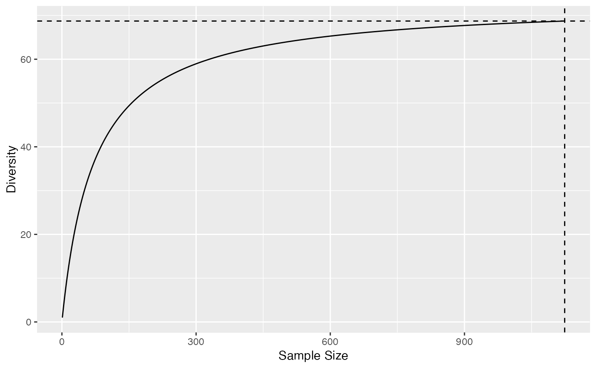

Accumulation.RdDiversity and Entropy Accumulation Curves represent the accumulation of entropy with respect to the sample size.
as.AccumCurve(x, y, low = NULL, high = NULL)
is.AccumCurve(x)
EntAC(Ns, q = 0, n.seq = seq_len(sum(Ns)), PCorrection="Chao2015", Unveiling="geom",
RCorrection="Rarefy", NumberOfSimulations = 0, Alpha = 0.05,
ShowProgressBar = TRUE, CheckArguments = TRUE)
DivAC(Ns, q = 0, n.seq = seq_len(sum(Ns)), PCorrection="Chao2015", Unveiling="geom",
RCorrection="Rarefy", NumberOfSimulations = 0, Alpha = 0.05,
ShowProgressBar = TRUE, CheckArguments = TRUE)
# S3 method for AccumCurve
plot(x, ..., main = NULL,
xlab = "Sample Size", ylab = NULL, ylim = NULL,
LineWidth = 2, ShadeColor = "grey75", BorderColor = "red")
# S3 method for AccumCurve
autoplot(object, ..., main = NULL,
xlab = "Sample Size", ylab = NULL,
ShadeColor = "grey75", alpha = 0.3, BorderColor = "red",
col = ggplot2::GeomLine$default_aes$colour,
lty = ggplot2::GeomLine$default_aes$linetype,
lwd = ggplot2::GeomLine$default_aes$size)An object. A numeric vector in as.AccumCurve.
An object.
A numeric vector.
A numeric vector.
A numeric vector.
A numeric vector containing species abundances.
A number: the order of diversity. Default is 1.
A sequence of numbers. Accumulation will be calculated at each value.
A string containing one of the possible corrections to estimate a probability distribution in as.ProbaVector: "Chao2015" is the default value. Used only for extrapolation and q different from 0, 1, 2.
A string containing one of the possible unveiling methods to estimate the probabilities of the unobserved species in as.ProbaVector: "geom" (geometric: the unobserved species distribution is geometric) is the default value. Used only for extrapolation and q different from 0, 1, 2.
A string containing a correction recognized by Richness to evaluate the total number of species in as.ProbaVector. "Rarefy" is the default value to estimate the number of species such that the entropy of the asymptotic distribution rarefied to the observed sample size equals the observed entropy of the data. Used only for extrapolation and q different from 0, 1, 2. If q is 0 (extrapolation of richness), "Rarefy" is taken for "Jackknife".
The number of Simulations to build confidence intervals.
The risk level, 5% by default.
Additional arguments to be passed to plot. Unused elsewhere.
The main title of the plot. if NULL (by default), there is no title.
The X axis label, "Rank" by default.
The Y axis label. if NULL (by default), "Probability" or "Abundance" is chosen according to the object class.
The interval of y values plotted.
The width of the line that represents the actual profile.
The color of the shaded confidence envelope.
The color of the bounds of the confidence envelope.
Opacity of the confidence enveloppe, between 0 and 1.
The color of the geom objects. See "Color Specification" in par.
The type of the lines. See lines.
The width of the lines. See lines.
If TRUE (default), a progress bar is shown.
Logical; if TRUE, the function arguments are verified. Should be set to FALSE to save time when the arguments have been checked elsewhere.
DivAC or EntAC estimate the diversity or entropy accumulation curve of a distribution.
See Tsallis for details about the computation of entropy at each level of interpolation and extrapolation.
In accumulation curves, extrapolation if done by estimating the asymptotic distribution of the community and estimating entropy at different levels by interpolation. The asymptotic richess is adjusted so that the extrapolated part of the accumulation joins the observed value at the sample size.
AccumCurve objects include EntAC and DivAC objects for entropy and diversity accumulation.
They generalize the classical Species Accumulation Curves (SAC) which are diversity accumulation of order $q=0$.
as.AccumCurve transforms two vectors (where x is the sammple size and y the accumulation) into an object of class AccumCurve.
AccumCurve objects can be plotted with either plot or autoplot methods.
A DivAC or an EntAC object. Both are AccumCurve objects, which are a list:
The sample size.
The value of entropy or diversity.
The lower bound of the confidence envelope of the estimation.
The upper bound of the confidence envelope of the estimation.
Attibutes "Size" and "Value" contain the actual sample size and the corresponding diversity or entropy.
AccumCurve objects can be summarized and plotted.
Chao, A., Gotelli, N. J., Hsieh, T. C., Sander, E. L., Ma, K. H., Colwell, R. K., Ellison, A. M (2014). Rarefaction and extrapolation with Hill numbers: A framework for sampling and estimation in species diversity studies. Ecological Monographs, 84(1): 45-67.
# Load Paracou data (number of trees per species in two 1-ha plot of a tropical forest)
data(Paracou618)
# Ns is the total number of trees per species
Ns <- as.AbdVector(Paracou618.MC$Ns)
# Accumulation curve of Simpson's diversity
autoplot(DivAC(Ns, q=2))
#>
